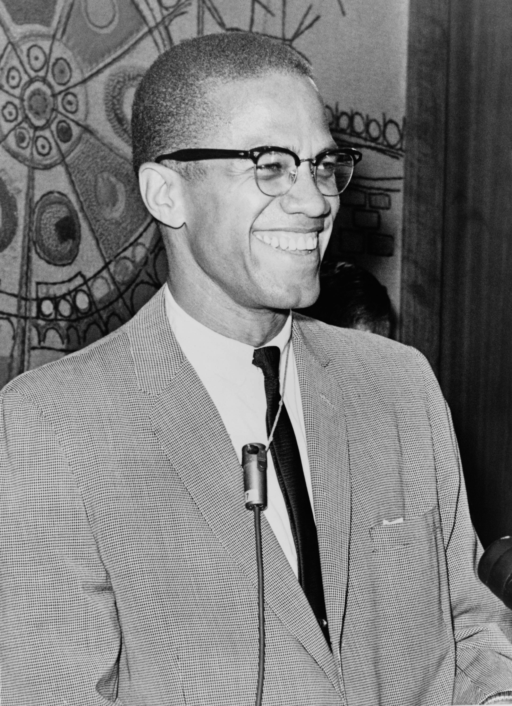

“A man who stands for nothing will fall for anything.”

Malcolm X, originally named Malcolm Little (May 19, 1925 – February 21, 1965) was a pivotal figure in the African American struggle for civil rights, advocating for black separatism and self-defense, and challenging the non-violent approach of other civil rights leaders of his time. As a child, he experienced violence and hate crimes firsthand against his family. When Malcolm X was 20 years old, he was arrested for breaking and entering. In prison, he met a fellow convict, John Bembry, who taught Malcolm about the Nation of Islam. These teachings included Black self-reliance and, ultimately, the return of the African diaspora to Africa. In prison Malcolm became a devout follower of the Nation of Islam, giving up pork and cigarettes. Malcolm Little gave up the last name his family recieved from their past slave masters, and changed his name to Malcolm X, with the X representing the unknown.
Immediately after leaving prison, Malcolm began preching at the Nation's Temple Number One in Detroit. Malcolm X preached for black people to be proud of being Afro-American. He preached that "We didn’t land on Plymouth Rock, Plymouth Rock landed on us, teaching black people were not put in their situation, but forced into it. "He openly stated his dislike for white people, and taught black people to be self-reliant. Malcolm famously said, "Concerning nonviolence, it is criminal to teach a man not to defend himself when he is the constant victim of brutal attacks," approving the use of violence to attain power. Through his radiacal and unconventional teachings, Malcolm quickly began accumilating a following. However, many people, including other civil rights leaders, condemned his teachings, saying he was too radical.
Later in his career, many of his controversial teachings forced Malcolm X to reevaluate his affiliation with the Nation of Islam. After the death of John F. Kennedy, Malcolm stated that, "Chickens come home to Roost", meaning that after creating violence to cities and countries around the world and U.S., the violence was bound to return back to JFK. Even for Malcolm X this was a very controversial opinion, and it forced the Nation of Islam to dissasociate themselves with Malcolm.
After leaving the Nation of Islam, Malcolm took a pilgramige to Mecca. During his pilgramige, Malcolm saw, "all colors, from blue-eyed blonds to Black-skinned Africans," working together, seeing eachother as equals. This led him him to see Islam as a means to achive racial unity. After his pigramige to Mecca, Malcolm's views became less extreme. He continued to preach for civil rights, but also preached for racial equality rather than black seperatism.
Through this time, the Nation of Islam saw Malcolm as a threat. They saw him as being detramental to its causes. Malcolm told the press that he knew the Nation of Islam was planning to kill him. On February 21, 1965, Malcolm was preparing to address the OAAU in Manhattan's Audubon Ballroom when a man rushed towards him and shot him twice in the chest with a sawed-off shotgun, killing him.
Malcolm X is widely regarded as one of the most influential African Americans in history, credited with boosting the self-esteem of Black Americans and re-establishing their connection to their African heritage. He played a significant role in promoting the spread of Islam within the Black community in the United States. Malcolm X's outspokenness and ability to articulate the complaints of African Americans regarding inequality made him more appealing to many Black Americans, particularly those residing in Northern and Western cities, than the mainstream civil rights movement. Malcolm X taught black people across america to be proud of who they are and to own the label of Afro-American. Many civil rights leaders and movements can trace their origins and insiprations back to Malcolm X.